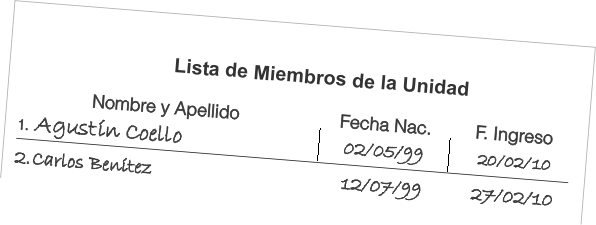

|
Tabla Unificada de Registro Control y Operaciones |
La Libreta de Campo es un block diseñado especialmente, para llevar nota de los datos más importantes de las actividades realizadas en la unidad. Los cuales son necesarios para llevar al día el TURCO, el Sistema de los Concursos Nacionales y los informes de los Programas Mundiales donde se esté participando. Su tamaño reducido busca que sea facil de llevar, así como como minimizar su impacto ecológico.
Importante: La idea, es vaciar la información en digital, en un breve periodo de tiempo.

A
Llenar la lista anexa al block, anotando en ella Nombre y Apellido, la Fecha de Nacimiento y la Fecha de Ingreso a la unidad.
Esto es necesario para poder identificar a los miembros de la unidad en cada una hojas del block, además de que son un requisito básico de control en los sistemas.
B
Completar los datos en las formas del block, una por cada actividad, tal como se describe a continuación:
1) Fecha de realización de la actividad, se sugiere este el formato DD/MM/AA. Si la actividad dura varios días, colocar aquí la fecha de inicio
2) Señalar en la casilla, si se trata de una Reunión Ordinaria de Unidad (RU), en este caso no hace falta indicar el lugar ya que se supone que es en el local de Grupo.
3) Lugar donde se llevó a cabo la actividad, lo más detallado posible.
3) Marcar al lado de cada número, la asistencia de los niños, niñas o jóvenes a la actividad, según lo anotado en la Lista de Miembros de la Unidad.
5) Señalar en las casillas, si la actividad puede; ser tomada en cuenta para uno de los Concursos Nacionales o para ambos inclusive.
6) Duración de la actividad, primero se coloca el número, y luego se señala en las casillas si son horas o noches, según sea el caso
7) Señalar en la casilla correspondiente, si se trató de una actividad organizada por la patrulla, la unidad, el grupo, el distrito, la Región o la Oficina Nacional.
8) Cada actividad del Programa Scout Mundial de Medioambiente o PSMM, cumple con un objetivo o finalidad del mismo. Si se trata del Proyecto Final para la obtención de la insignia, marque la casilla.
9) Nombre del proyecto de Mensajeros de la Paz. En la casilla correspondiente, indique en que fase del proyecto se está trabajo en la actividad correspondiente.
10) Si hubo entrega de insignias en la actividad (icluyendo las promesas) indicar el número del o los niños, niñas o jóvenes, según lo anotado en la Lista de Miembros de la Unidad, así como también la insignia entregada.
11) Indicar cualquier eventualidad, información o dato interesante sobre la actividad, si necesita más espacio puede escribir al dorso de la hoja.
12) Firma del responsable por la Unidad durante la actividad
...